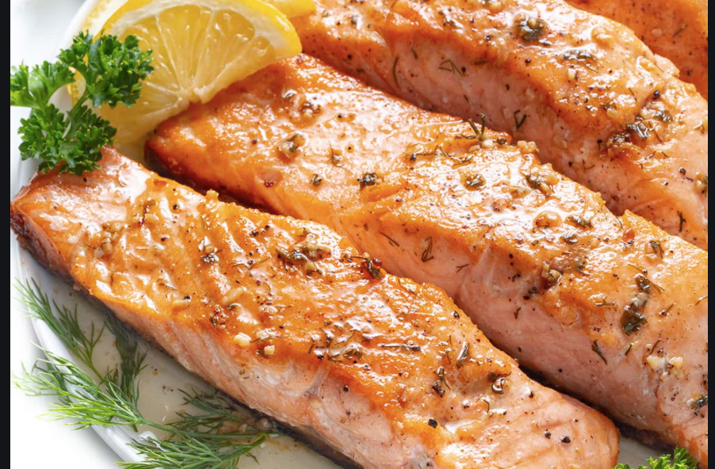

Chicken Feta

A perfectly cooked salmon filet.
Ingredients
- 2 Wild Caught Salmon Filets
- High Quality Olive Oil
- Salt & Pepper
Steps
- Dry salmon completely using paper towels.
- Generously season both sides with salt and pepper.
- Heat the pan on medium high heat. Drizzle a small amont of oil in the pan.
- Place salmon skin side down and press onto pan for 20-30 seconds.
- Cook until almost completly done with the skin side down (4-6 mins). Flip for 20-30 seconds. Remove from heat. *Shoutout to Kenji for this technique.